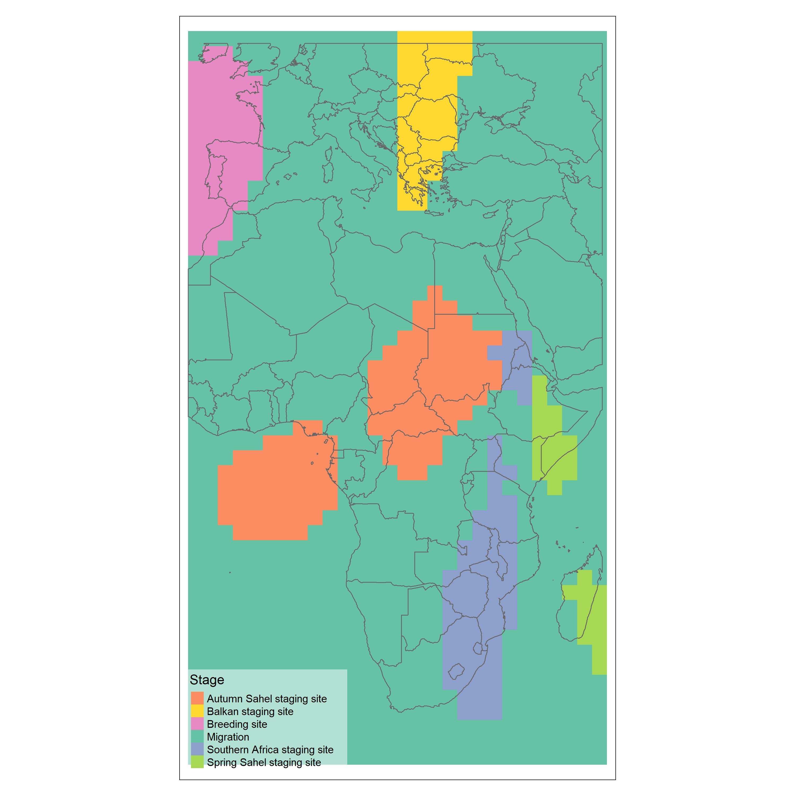

GEOG 6000 Advanced Geographical Data Analysis
Spatial Dynamics of the Red-Backed Shrike Annual Migration Cycle
Background
The red-backed shrike (Lanius collurio) is a migratory bird species that travels from Europe and Asia to southern Africa annually. This migration follows a north-south route through eastern Africa during late autumn and early winter, with a return journey in spring. The species' migration patterns are influenced by multiple factors including food availability, climate conditions, weather patterns, and resting site locations. Their diet primarily consists of large invertebrates like beetles and grasshoppers, as well as small vertebrates such as lizards, making them sensitive to climate and weather fluctuations.
While currently classified as a least-concern species globally, the red-backed shrike population is declining. Two significant concerns are affecting this species: eastern Africa is experiencing increasingly severe drought patterns (more frequent, more intense, and longer duration), and the bird's breeding presence in western Europe, particularly Great Britain, has dramatically decreased since 1989. It is currently a Red List species in Great Britain with declining numbers throughout much of western Europe.
Figure 1: The kriging interpolation grid of the migration stages of the red-backed shrike, showing predicted areas for different stages of migration.
Methodology
This study utilized geolocator data collected from April 2012 through May 2014, containing 4,403 location points classified into migration stages. As seen in Figure 2, these points show the locations where data was collected during the study, visually suggesting a longitudinal difference in the Sahel staging sites between spring and autumn migrations.

Figure 2: Point map showing the locations data was collected during the study, with different colors representing different migration stages.
Since there is no ordinal ranking of migration stages, indicator kriging was deemed appropriate to generate prediction surfaces from the categorical variable of migration stage. Variogram models were created for each migration stage to determine spatial autocorrelation patterns. For the Southern Africa staging site, a fitted circular model was used, while for all other migration stages, a fitted Gaussian model was employed. Figure 3 shows the variogram models used for each of the six different migration stages.
Figure 3a: Variogram model for breeding site

Figure 3b: Variogram model for Balkan staging site
Figure 3c: Variogram model for autumn Sahel staging site
Figure 3d: Variogram model for southern Africa staging site
Figure 3e: Variogram model for spring Sahel staging site
Figure 3f: Variogram model for migration stage
As shown in Figures 3a-3f, the variogram models display distinct spatial autocorrelation patterns for each migration stage, which informed the kriging interpolation process. These models were essential for understanding the spatial relationships within each stage and for generating accurate prediction surfaces.
Two primary methods were used for indicator kriging analysis:
- A grid-based approach that interpolated over a prediction grid sized to match the minimum bounding rectangle of the study area, with cell sizes set to 250 km.
- A polygon-based approach that interpolated over national borders, where each polygon represented a country in the study area.
For each method, individual prediction interpolations were combined into a single matrix, and the maximum prediction value at each location was used to generate a comprehensive prediction surface. This approach revealed the most likely migration stage for each location in the study area.
Results
The spatial prediction patterns generated by both methods aligned well with the observed point data. As illustrated in Figure 1, the grid-based approach showed the breeding site areas confined primarily to the Iberian Peninsula and Bay of Biscay. The Balkan staging area stretches from Greece northward to Ukraine, Belarus, and Poland in a north-south direction. In southern Africa, a staging area is predicted from eastern South Africa to the Kenya-Uganda border.
The autumn Sahel staging area, primarily predicted over much of Sudan, Chad, and the Central African Republic, showed a secondary prediction site over the Gulf of Guinea with relatively high variance compared to other areas. This pattern, visible in Figure 1, may be related to the "ping pong effect" observed in the variogram model for the autumn Sahel staging site (Figure 3c) after a distance of approximately 3,000 km.
The country-based approach, shown in Figure 4, produced similar patterns to the grid method but with some notable differences. Some Balkan countries were predicted to be migration areas, and Madagascar was the only country predicted as a spring Sahel staging site. While less robust than the grid method, this approach provides a useful framework for countries predicted to be either an autumn Sahel staging site or a southern Africa staging site.
Figure 4: The kriging interpolation by country of the migration stages of the red-backed shrike, along with variance maps.
Discussion & Conclusion
This study demonstrates that indicator kriging can effectively model and understand intercontinental migration patterns of the red-backed shrike. The grid prediction method, as displayed in Figure 1, produced interpolations that aligned well with source data observations, with relatively low variance for most of the study area except for the region around the Gulf of Guinea. The country-based approach (Figure 4) provides a complementary perspective that may be more useful for national-level planning and conservation efforts.
The variogram models shown in Figures 3a-3f were crucial for understanding the spatial relationships within each migration stage and for generating accurate prediction surfaces. The distinct patterns observed in each model reflect the unique spatial dynamics of each stage of the red-backed shrike's annual migration cycle.
As shown in Figures 1-4, the generated baseline prediction maps serve as valuable references for future observations, allowing for the monitoring of shifts in migration patterns as environmental conditions change. Future work could explore adding covariates for time-location within an annual cycle or species presence in an area, which may improve predictions in regions where observations of multiple stages are intermingled, such as Ethiopia and Kenya.
The variance maps accompanying Figures 1 and 4 highlight areas of uncertainty in the predictions, particularly in the Gulf of Guinea region. These areas of uncertainty warrant further investigation and could benefit from additional data collection in future studies. Despite these uncertainties, the overall prediction patterns align well with observed migration behaviors and provide valuable insights into the spatial dynamics of the red-backed shrike's annual migration cycle.
This analysis complements previous research on the red-backed shrike's migration patterns and provides a framework for monitoring changes as environmental conditions evolve and the species' population continues to decline. The baseline prediction maps shown in Figures 1 and 4 serve as reference points for future observations and allow for the detection of shifts in migration patterns over time.
The full paper can be found here.
Skills Used
- Spatial Statistics and Geostatistics
- Kriging Interpolation
- Variogram Modeling
- Categorical Data Analysis
- R Programming